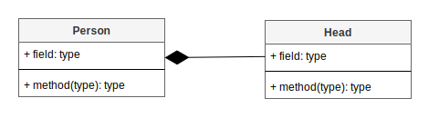

JPA
Intro
Recap: SQL, JDBC
Persistence deployment descriptor
META-INF/persistence.xmlMinimal persistence.xml file
<persistence>
<persistence-unit name="[REQUIRED_PERSISTENCE_UNIT_NAME_GOES_HERE]">
SOME_PROPERTIES
</persistence-unit>
</persistence>Data source in Java EE by JNDI
<persistence>
<persistence-unit name="[REQUIRED_PERSISTENCE_UNIT_NAME_GOES_HERE]">
<!--GLOBAL_JNDI_GOES_HERE-->
<jta-data-source>jdbc/myDS</jta-data-source>
</persistence-unit>
</persistence>Data source in Java SE
<properties>
<property name="javax.persistence.jdbc.driver" value="org.postgresql.Driver" />
<property name="javax.persistence.jdbc.url" value="jdbc:postgresql://localhost:5432/my-schema" />
<property name="javax.persistence.jdbc.user" value="postgres" />
<property name="javax.persistence.jdbc.password" value="postgres" />
</properties>Mapped classes
<class>com.example.model.CarEntity</class>
<class>com.example.model.EngineEntity</class><exclude-unlisted-classes>false</exclude-unlisted-classes>JPA properties
<persistence>
<persistence-unit name="my-perstistence">
<properties>
...
</properties>
</persistence-unit>
</persistence>Property map
Map<String, String> properties = new HashMap<>();
properties.put("javax.persistence.jdbc.driver", "org.apache.derby.jdbc.EmbeddedDriver");
properties.put("javax.persistence.jdbc.url", "jdbc:derby:simpleDb;create=true");
properties.put("javax.persistence.jdbc.user", "test");
properties.put("javax.persistence.jdbc.password", "test");
Persistence.createEntityManagerFactory(PERSISTENCE_UNIT_NAME, properties);JPA implementations
Hibernate: The most advanced and widely used (A lot of libraries are used, especially with JBoss)Toplink: Only supports the basic JPA specs. (This was oracle’s free version of the JPA implementation)EclipseLink: Is based on TopLink, and is the intended path forward for persistence for Oracle and TopLinkApache OpenJPA: Best documentation but seems very buggy. Open source implementation for JPADataNucleus: Well documented, open source; also JDOObjectDB: well documentedCMobileCom JPA: light-weight implementation for both Java and Android.
Schema generation
javax.persistence.schema-generation.database.actionnone- no schema creation or deletioncreate- creates the database schema on application deployment, and artifacts will remain unchanged after redeploymentdrop-and-create- deletes any artifacts in the database, and re-creates the database on deploymentdrop- schema deleted on application deployment
E.g. <property name="javax.persistence.schema-generation.database.action" value="create"/>
Schema generation - unified properties
Since JPA 2.1 (2013):
<property name="javax.persistence.schema-generation.database.action" value="drop-and-create"/>
<property name="javax.persistence.schema-generation.create-source" value="script"/>
<property name="javax.persistence.schema-generation.create-script-source" value="META-INF/sql/create.sql" />
<property name="javax.persistence.sql-load-script-source" value="META-INF/sql/data.sql" />
<property name="javax.persistence.schema-generation.drop-source" value="script" />
<property name="javax.persistence.schema-generation.drop-script-source" value="META-INF/sql/drop.sql" />It replaced earlier implementation specific properties:
<property name="eclipselink.ddl-generation" value="create-tables" /><property name="hbm2ddl.auto">create-drop</property>
Getting started - task
Entity mappings
Object-Relation Mapping (ORM)
a square peg in a round hole

Entity class
public class Employee {
private long id;
private String ename;
// getters setters
}like data transfer objects we used earlier
must follow JavaBeans convention
Obsolete XML mappings
<? xml version="1.0" encoding="UTF-8" ?>
<entity-mappings xmlns="http://java.sun.com/xml/ns/persistence/orm"
xmlns:xsi="http://www.w3.org/2001/XMLSchema-instance"
xsi:schemaLocation="http://java.sun.com/xml/ns/persistence/orm
http://java.sun.com/xml/ns/persistence/orm_1_0.xsd"
version="1.0">
<entity class="Employee">
<table name="EMPLOYEETABLE"/>
<attributes>
<id name="eid">
<generated-value strategy="TABLE"/>
</id>
<basic name="ename">
<column name="EMP_NAME" length="100"/>
</basic>
</attributes>
</entity>
</entity-mappings>
Annotation Mappings
@Entity
public class Employee {
// ...
}@Entity
@Table(name = "EMPLOYEE")
public class Employee {
// ...
}Entity members
Identifier
@Id
private Long id;@Id
@GeneratedValue(strategy=GenerationType.AUTO)
private Long id;Generation strategies: AUTO, TABLE, SEQUENCE, or IDENTITY.
Identifier - task
Persistable members
By default all members are persistable:
private String name;Attributes (optional):
@Column(name="USER_NAME")
private String name;@Column(unique=true) // default: false @Column(nullable=false) // default: true @Column(insertable=false) // default: true @Column(updatable=false) // default: true @Column(length=32) // default: 255 @Column(precision=7, scale=2) // default: 0 Persistable members - task
Enumeration column
- using ordinal numbers:
@Enumerated
private Status status;- using string labels:
@Enumerated(EnumType.STRING)
private Status status;Enumeration column - task
Transient - not persisted
@Transient
@Transient
private String name;Transient column - task
Large objects
@Lob
private String body; @Lob
@Column(columnDefinition="BLOB NOT NULL")
protected byte[] pic;Large objects - task
Entity manager - persisting
Create
Employee employee = new Employee( );
employee.setId( 1201 );
employee.setName( "Gopal" );
entitymanager.persist( employee );Create - task
Read
Employee employee = entitymanager.find( Employee.class, 1201 );Read - task
Update
Employee employee = entitymanager.find( Employee.class, 1201 );
employee.setName("John Smith");
entitymanager.merge( employee );Update - task
Delete
Employee employee = entitymanager.find( Employee.class, 1201 );
entitymanager.remove( employee );Delete - task
Entity lifecycle

New/Transient - unknown for EntityManager, does not exist in database
Managed - object is persisted in database and managed by EntityManager
Detached - object is still persisted in database, but no longer managed by EntityManager
Removed - object is deleted from database, and no longer managed by EntityManager
Merge vs Persist vs Save vs Refresh
Place in entity lifecycle:
persisting can be used only for new entities.
merging is required only for detached entities.
saving is vendor specific method
refreshing renews the state of the instance from the database, overwriting changes made to the entity, if any.
Re-attach entity
Student student1 = entityManager.find(Student.class, 2L);// s1 is MANAGED
entityManager.clear(); // everyhing is DETACHED
student.setLastName("Vincent");
Student student2 = entityManager.merge(student1); // reattach
System.out.println(entityManager.contains(student1)); // false: s1 is still DETACHED
System.out.println(entityManager.contains(student2)); // true: s2 is MANAGED Callback Methods on JPA Entities
@EntityListeners(UserListener.class)
public class User {
}
Method annotated with @PrePersist, @PostPersist, @PostLoad, @PreUpdate, @PostUpdate, @PreRemove, @PostRemove
E.g.
public class UserListener {
@PrePersist
public void userPrePersist(User ob) {
System.out.println("Listening User Pre Persist : " + ob.getName());
}Relations
Recap: relations in DB

- one-to-one -
1:1 - many-to-one -
n:1 - one-to-many -
1:n - many-to-many -
n:n
Recap: relations in OOP

- Association - two classes know about each other, but they do not affect each others lifetime
- Aggregation - classes refers to each other but both can live independently
- Composition - class
Bis an integral part of classA(Acan’t logically exist without having a classBobject)
How they match?
1:1 - one to one

@OneToOne
1:1 - one to one - example
@Entity
class Person {
@Id
private Long id;
@OneToOne
private Head head;
}
@Entity
class Head {
@Id
private Long id;
}1:1 - one to one - task
n:1 - many to one
@ManyToOne
n:1 - many to one - example
@Entity
class OrderEntry {
@Id
private Long id;
@ManyToOne
private Product product;
}
@Entity
class Product {
@Id
private Long id;
}n:1 - many to one - task
1:n - one to many
@OneToMany
n:1 - one to many - example
@Entity
class InvoiceEntry {
@Id
private Long id;
@ManyToOne
private Invoice invoice; <---- mapped by
}
@Entity
class Invoice {
@Id
private Long id;
@OneToMany(mappedBy="invoice")
List<InvoiceEntry> entries;
}n:1 - one to many - task
n:n - many to many
@ManyToMany
n:n - many to many - example
@Entity
class Post {
@Id
private Long id;
@ManyToOne
private List<Tag> tags = new ArrayList<>();
}
@Entity
class Tag {
@Id
private Long id;
@ManyToMany(mappedBy = "tags")
private List<Post> posts;
}n:n - many to many: Join table
@ManyToMany
@JoinTable(name = "post_tag",
joinColumns = @JoinColumn(name = "post_id"),
inverseJoinColumns = @JoinColumn(name = "tag_id")
)n:n - many to many - task
Column names
@Column- for a field@JoinColumn(name = "invoice_id")- for relation
Cascades
ALLPERSISTMERGEREMOVEREFRESHDETACH
@OneToMany(mappedBy = "person", cascade = CascadeType.ALL)
private List<Address> addresses;Lazy- vs Eager-Loading
Querying: JPQL
JPQL
Query query = entitymanager.createQuery( "Select e from Employee e" );
List<Employee> list=(List<Employee>)query.getResultList( );Query query = entitymanager.createQuery( "Select e from Employee e where e.salary Between 30000 and 40000" );
List<Employee> list=(List<Employee>)query.getResultList( );JPQL - task
Querying: criteria
Criteria - basics
CriteriaBuilder cb = em.getCriteriaBuilder();
CriteriaQuery<Employee> query = cb.createQuery(Employee.class);
Root<Employee> c = query.from(Employee.class);
query.select(c);Criteria: where
CriteriaQuery<Country> q = cb.createQuery(Country.class);
Root<Country> c = q.from(Country.class);
q.select(c);
ParameterExpression<Integer> p = cb.parameter(Integer.class);
q.where(cb.gt(c.get("population"), p));q.where(
cb.or(
cb.gt(c.get("population"), p),
cb.lt(c.get("area"), a)
)
);Criteria: order
CriteriaQuery<Country> q = cb.createQuery(Country.class);
Root<Country> c = q.from(Country.class);
q.select(c);
q.orderBy(cb.asc(c.get("currency")), cb.desc(c.get("population")));Criteria: group & having
CriteriaQuery<Country> q = cb.createQuery(Country.class);
Root<Country> c = q.from(Country.class);
q.multiselect(c.get("currency"), cb.sum(c.get("population")));
q.where(cb.isMember("Europe", c.get("continents")));
q.groupBy(c.get("currency"));
g.having(cb.gt(cb.count(c), 1));Join
CriteriaQuery<Country> q = cb.createQuery(Country.class);
Root<Country> c1 = q.from(Country.class);
Root<Country> c2 = q.from(Country.class);
q.multiselect(c1, c2);Entity inheritance
Entity inheritance types
SINGLE_TABLEJOINEDTABLE_PER_CLASS
Entity inheritance: single table
@Entity
@Inheritance
@DiscriminatorColumn(name="PROJ_TYPE")
@Table(name="PROJECT")
public class Project implements serializable{
@Id
@GeneratedValue(strategy = GenerationType.IDENTITY)
private long id;
...
}
@Entity
@DiscriminatorValue("L")
public class LargeProject extends Project {
private BigDecimal budget;
}
@Entity
@DiscriminatorValue("S")
public class SmallProject extends Project {
}Entity inheritance: joined
@Entity
@Inheritance(strategy=InheritanceType.JOINED)
@DiscriminatorColumn(name="PROJ_TYPE")
@Table(name="PROJECT")
public abstract class Project {
@Id
private long id;
private String name;
...
}
@Entity
@DiscriminatorValue("L")
@Table(name="LARGEPROJECT")
public class LargeProject extends Project {
private BigDecimal budget;
}
@Entity
@DiscriminatorValue("S")
@Table(name="SMALLPROJECT")
public class SmallProject extends Project {
}Entity inheritance: table per class
@Entity
@Inheritance(strategy=InheritanceType.TABLE_PER_CLASS)
public abstract class Project {
@Id
private long id;
...
}
@Entity
@Table(name="LARGEPROJECT")
public class LargeProject extends Project {
private BigDecimal budget;
}
@Entity
@Table(name="SMALLPROJECT")
public class SmallProject extends Project {
}Transactions
Cache
Two levels of cache
Cache level 1
The first level of caching is the persistence context.
A managed entity with the same id and class as another in the same persistence context , will return the same instance.
OrderLine orderLine = new OrderLine(order, product);
entityManager.persist(orderLine);
OrderLine orderLine2 =entityManager.find(OrderLine, orderLine.getId()));
System.out.println(orderLine == orderLine2);Cache level 2
Second-level cache is SessionFactory-scoped, meaning it is shared by all sessions created with the same session factory.
@CacheableCache precedence
If an instance is already present in the first-level cache, it is returned from there
If an instance is not found in the first-level cache, and the corresponding instance state is cached in the second-level cache, then the data is fetched from there and an instance is assembled and returned
Otherwise, the necessary data are loaded from the database and an instance is assembled and returned